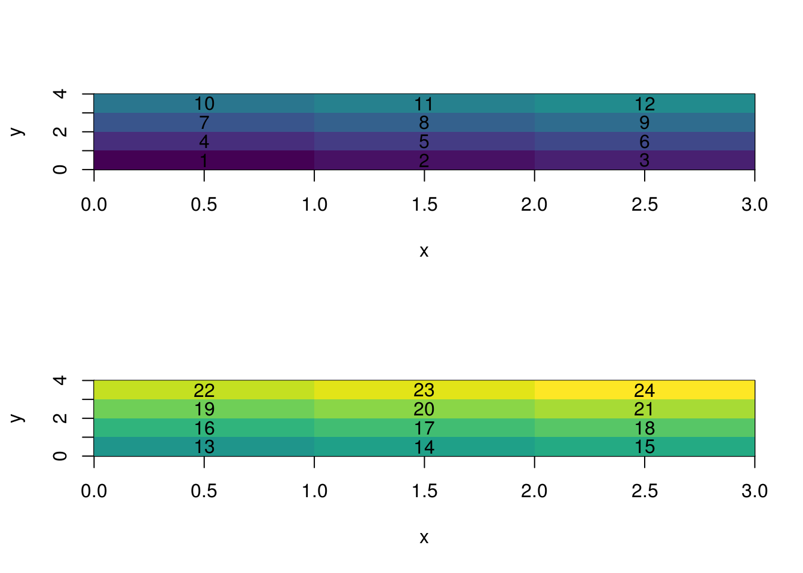
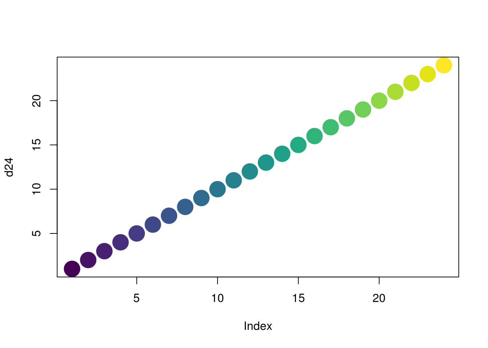
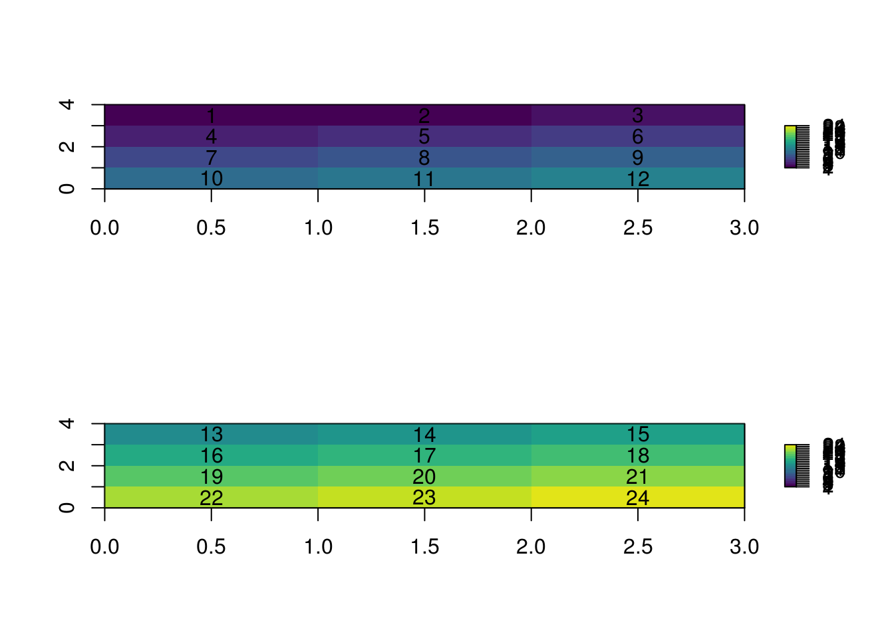

R uses column-major order for matrices and arrays.
This is a simple rule to remember, but there are several rather subtle implications with how this relates to other conventions.
Consider the numbers 1:24 as a one-dimensional reference point, a basis from which we understand several contexts.
Create the data as 32-bit integers (4 bytes each).
d24 <- 1:24Create colours as a matching property for each individual value of data.
cols <- viridis::viridis(length(d24))
## worker function to drive image as I wish it were
mimage <- function(x, label = TRUE, ...) {
UseMethod("mimage")
}
mimage.matrix <- function(x, label = TRUE, cols, ...) {
mat <- x
x <- seq(0, nrow(mat))
y <- seq(0, ncol(mat))
image(x, y, mat, col = cols)
}
mimage.array <- function(x, label = TRUE, ...) {
dn <- length(dim(x))
if (dn < 2 | dn > 3) {
warning("we expect a matrix or 3D array but dim(x):")
print(dim(x))
}
on.exit(par(p), add = TRUE)
p <- par(mfrow = grDevices::n2mfrow(dim(x)[3]))
xx <- seq(0, nrow(x))
yy <- seq(0, ncol(x))
xy <- expand.grid(x = head(xx, -1) + 0.5,
y = head(yy, -1) + 0.5)
for (i in seq_len(dim(x)[3])) {
mimage(x[,,i, drop = TRUE], cols = cols[(1:12) + 12 * (i-1)])
if (label) text(xy$x, xy$y, label = seq_len(nrow(xy)) + nrow(xy) * (i - 1))
}
}Generate a matrix from the data, here the rows of the matrix go down the page and columns go from left to right.
matrix(d24)## [,1]
## [1,] 1
## [2,] 2
## [3,] 3
## [4,] 4
## [5,] 5
## [6,] 6
## [7,] 7
## [8,] 8
## [9,] 9
## [10,] 10
## [11,] 11
## [12,] 12
## [13,] 13
## [14,] 14
## [15,] 15
## [16,] 16
## [17,] 17
## [18,] 18
## [19,] 19
## [20,] 20
## [21,] 21
## [22,] 22
## [23,] 23
## [24,] 24Consecutive elements in the data occur next to each other in the column, this is what column-major means. Now if we provide a set of dimensions longer than 1 we see more clearly how the data populate down the rows, then to the side by columns, and finally by row then column in the next slice of this 3D array.
a <- array(d24, c(3, 4, 2))
a## , , 1
##
## [,1] [,2] [,3] [,4]
## [1,] 1 4 7 10
## [2,] 2 5 8 11
## [3,] 3 6 9 12
##
## , , 2
##
## [,1] [,2] [,3] [,4]
## [1,] 13 16 19 22
## [2,] 14 17 20 23
## [3,] 15 18 21 24It’s convenient in R that we can think about rows runing “down the page”, then columns that are “left to right” - but we then run out of dimensions so “into the page” has to be pulled out and becomes a new step below the first run of rows. What if we represent the matrix as a raster image.
Again we have to put the second slice of the third dimension “down the page” because we don’t have a 3D visualization device. (Hold that thought. )
mimage(a)
What is happening here? The colours start dark and get lighter, so why do we see that pattern go up and then down, things aren’t lining up. To be sure, let’s also plot the colours very directly in order 1, 24 to make sure we can think about the order properly.
plot(d24, col = cols, pch = 19, cex = 3)
There are two problems with our expection here. One problem is that we are used to running “down the page”, both when we fill the matrix with numbers and when we print subsequent slices from a 3D array. This conflicts with another expectation we have, which is that in a Cartesian frame we have an X-axis that starts with low numbers on the left and runs to higher numbers on the right, and a Y-axis that starts at the bottom and runs “up the page”. (We can see that here in the numbers on the axis increasing left to right and bottom to top).
The second problem is that running down the rows is now going left to right in the image, so we are going left to right then up, left to right, then up, … then, we flip one entire page down below where we started and left to right, up again, … etc.
This is confusing! The important thing to remember is how the data looks when we print it in the console, and where the numbers go next when the first slice is finished, because this corresponds with the order of the extraction index syntax in R:
a[, 1:2, 1]## [,1] [,2]
## [1,] 1 4
## [2,] 2 5
## [3,] 3 6a[, 1:2, 2]## [,1] [,2]
## [1,] 13 16
## [2,] 14 17
## [3,] 15 18It’s also important to note that we effortlessly are juggling these explicit and implicit coordinate systems all the time, when we make plots, read text on a page, interpret data structures, and interrogate models by various means.
The raster package uses the other convention when plotting a raster, in row-major form. To see this in action we turn our array into a RasterBrick.
library(raster)## Loading required package: spb <- setExtent(brick(a, transpose = TRUE), c(0, nrow(a), 0, ncol(a)))
p <- par(mfrow = grDevices::n2mfrow(nlayers(b)))
for (i in seq_len(nlayers(b))) {
plot(b[[i]], col = cols, breaks = d24, zlim = cellStats(b[[i]], range), asp = "")
text(coordinates(b), lab = d24[(1:12) + 12 * (i-1)])
}
Notice the transpose=TRUE which is the right way to have an R matrix converted into the raster orientation. It’s also true that the intention might be very different, but it can be very confusing with a symmetric data set like this. It’s best to have a unambiguously identifiable orientation in the data (like a map) to confirm that we are getting what we need.
When we generated the array of data, we put the values in in order 1:24 and we made an image that showed us reading left to right and up the page - arguably this is the “right” way, but a more common convention used in image graphics and in many spatial software packages is in the western world reading convention, left to right and from top to bottom.
This is what the raster brick looks like under the hood.
values(b)## layer.1 layer.2
## [1,] 1 13
## [2,] 2 14
## [3,] 3 15
## [4,] 4 16
## [5,] 5 17
## [6,] 6 18
## [7,] 7 19
## [8,] 8 20
## [9,] 9 21
## [10,] 10 22
## [11,] 11 23
## [12,] 12 24This finally is very easy to understand. Note that we had to use transpose = TRUE, but now the order of the values down the rows is the order of the pixels in the plot above from left to right and down.
The way to think about each ‘layer’ is as the “flattened” version seen in each column here. That is literally how data is stored within raster, whenever it is in memory. It is referred to as “BSQ” or “band-sequential”. This means that a ‘layer’ or a slice in our 3D array is a band, and that all its values are stored in an R matrix using column-major convention.
So it’s still confusing, we are already juggling several conventions and coordinate systems. But, raster is so powerful and so capable of reading, writing, manipulating and converting data in many ways that it’s well worthwhile to take on board how these conventions work.
The fact that the cell number runs from top left to right and down in order is also very convenient, since many data extraction, matching and grouping routines can rely on this convention for very efficient processing.
When we write out raster data in native format there is a default setting of bandorder to be BIL, or band-interleaved.
These are exactly the same, the files will be identical.
file0 <- rasterTmpFile()
file1 <- rasterTmpFile()
b0 <- writeRaster(b, file0, datatype = "FLT4S")
b1 <- writeRaster(b, file1, bandorder = "BIL")
rb <- function(x) {
readBin(x,"raw", n= file.info(x)$size)
}
identical(digest::digest(rb(file0)),
digest::digest(rb(file1)))## [1] FALSESo, our data is stored in BSQ in-memory but the default when we write it out is to convert it to BIL. When we read that BIL or BSQ version in from file, it will be BSQ.
Again this is confusing but it’s because tasks that are common to multi-layered data are more efficient - specifically extracting a time-series pixel in one location is most efficient in BIL, because only one read operation is required to get all of the data.
In very raw form, without any safety checks or generalizations.
## something is wrong...
library(ff)
b0_ff <- ff(filename = file0, vmode = "single", dim = dim(b0), readonly = TRUE )library(ffraster)
ff_b <- ff_object(brick(file0))
ff::as.ram(ff_b)## , , 1
##
## [,1] [,2] [,3]
## [1,] 1 2 3
## [2,] 4 5 6
## [3,] 7 8 9
## [4,] 10 11 12
##
## , , 2
##
## [,1] [,2] [,3]
## [1,] 13 14 15
## [2,] 16 17 18
## [3,] 19 20 21
## [4,] 22 23 24
##
## attr(,"physical")
## (hidden, use physical(x) to access the physical attributes and vmode(x) for accessing vmode)
## attr(,"virtual")
## (hidden, use virtual(x) to access the virtual attributes)
## attr(,"vmode")
## FLT4S
## "single"TBD we need dimorder sorted for detection from raster .grd before proceeding